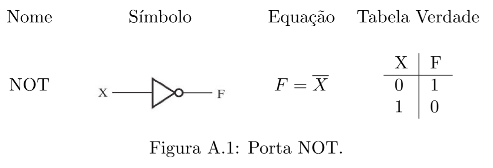
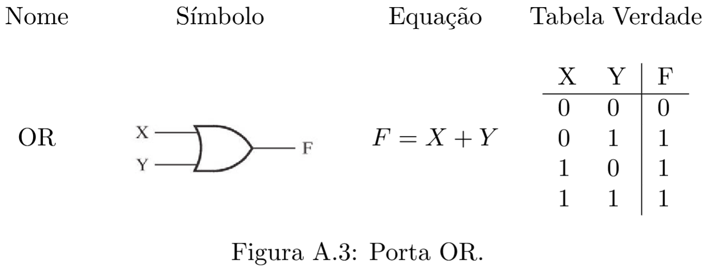
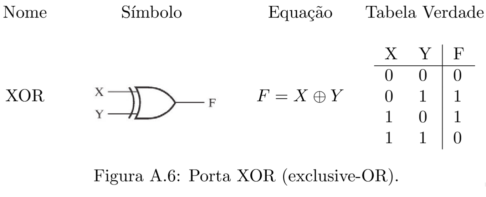
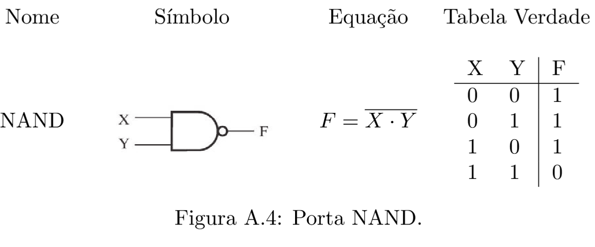
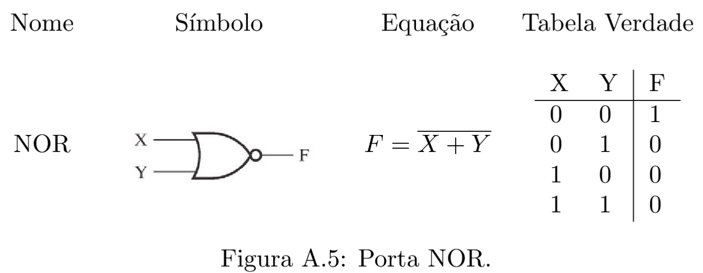
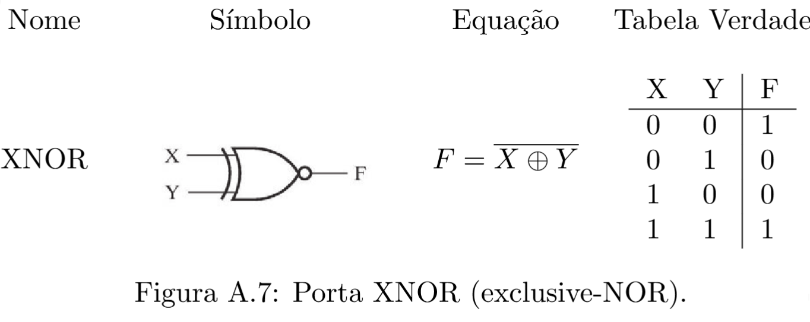
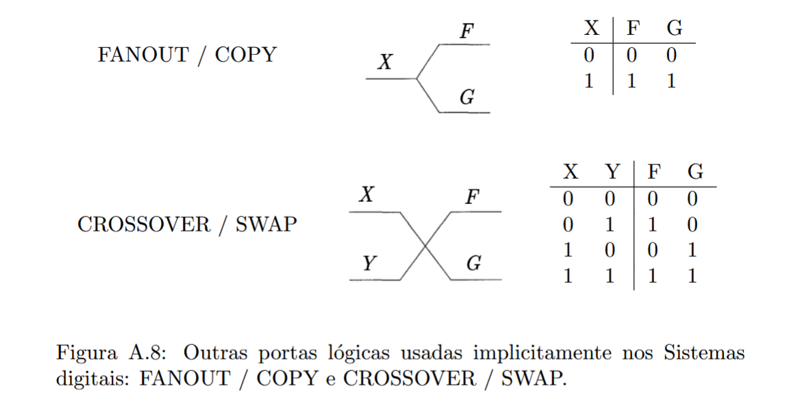

Computação Clássica#
Referências
Material extraído do TCC Computação Quântica: Uma abordagem para estudantes de graduação em Ciências Exatas, de Giovani Goraiebe Pollachini.
Um computador digital é um sistema que pode seguir uma sequência de instruções, chamada programa, e que opera em um conjunto de informações. Os computadores digitais modernos são compostos de milhões a bilhões de transistores, que se agrupam em circuitos digitais. Para lidar com a complexidade desses sistemas, os circuitos são subdivididos em circuitos menores, que realizam funções específicas. Esses circuitos são considerados ``caixas pretas’’, em que se ignoram os detalhes internos, e são agrupados de forma a realizar funções mais sofisticadas.
A engenharia trabalha com níveis de abstração; cada nível corresponde a omitir detalhes internos dos subsistemas constituíntes, ou da camada de abstração anterior. Uma discussão mais detalhada sobre as camadas de abstração do computador será realizada na seção seguinte.
Para que o computador consiga operar em um conjunto de informações, é necessário que essa informação seja traduzida, ou, codificada, de forma conveniente. O projeto dos computadores digitais se baseia em que as informações de entrada do sistema, e mesmo as instruções a serem seguidas, são codificadas em bits.
Os bits são variáveis que podem assumir apenas dois valores, rotulados de 0/1 ou Verdadeiro/Falso, por exemplo. No computador digital, a tensão elétrica é utilizada como bit; as tensões próximas a \(0V\) são consideradas como bit 0 e as tensões próximas à tensão de alimentação do circuito (normalmente \(5V\) ou \(3,\!3V\)), como bit 1.
Nas seções seguintes alguns desses tópicos serão detalhados. A ênfase será nas ideias vinculadas aos Sistemas Digitais, no manejo da complexidade por meio das camadas de abstração e nos detalhes das camadas mais próximas da camada física, com o objetivo de passar a ideia de como um computador digital clássico funciona. A finalidade é, também, comparar esse paradigma de computação com as ideias que estão surgindo na área da Computação Quântica.
Niveis de abstração#
Na engenharia, uma maneira de lidar com a complexidade de sistemas muito grandes é subdividí-los em subsistemas que possam ser descritos de maneira mais simples, omitindo detalhes internos. Componentes mais básicos são usados para projetar blocos que realizam funções simples. Esses blocos passam a ser descritos apenas pela sua função (como as saídas se comportam em relação às entradas), e passa-se a ignorar sua estrutura interna. Sistemas mais complexos podem ser projetados por meio desses blocos. A cada vez que se agrupa os sistemas em blocos e passa-se a ignorar sua estrutura interna, sobe-se um nível nas camadas de abstração. Quando se ``abre’’ um sistema para analisar sua estrutura interna, passa-se à camada de abstração inferior.
Essa divisão em camadas de abstração permite que os diversos blocos do sistema sejam projetados de forma paralela. Além disso, o projeto de um bloco pode ser reaproveitado em outros momentos, no mesmo projeto ou em outros. Outra vantagem é que o sistema passa a ser visto como composto de uma quantidade relativamente pequena de subsistemas, em vez de ser visto como milhões de transistores, cujo funcionamento em conjunto seria virtualmente impossível de descrever diretamente.
A figura a seguir ilustra as camadas de abstração presentes no computador digital. Dependendo do autor, as camadas de abstração são nomeadas de maneira ligeiramente diferente ou são consideradas algumas subcamadas extra.
Nível lógico#
O nível lógico refere-se à camada de abstração imediatamente acima da dos transistores. Os transistores são reunidos em portas lógicas. Nessa camada de abstração, os sinais de tensão na entrada e na saída são interpretados como bits, e as portas lógicas que operam esses bits simulam as funções lógicas como OR, AND, NOT, entre outras.
Nesse agrupamento em blocos os detalhes internos do circuito são ignorados.
Álgebra booleana#
As variáveis booleanas são variáveis que podem assumir apenas dois valores, rotulados como 0/1 ou Falso/Verdadeiro. Os bits são sinônimos de variáveis booleanas. As funções \(f\colon \{0,1\}^n \to \{0,1\}^m \,\), que levam um conjunto de \(n\) bits em um conjunto de \(m\) bits, são chamadas funções booleanas. As funções booleanas podem ser especificadas por expressões matemáticas ou por uma tabela – a \emph{tabela verdade} – listando todos os possíveis valores de entrada e a saída atribuída a cada valor de entrada.
Algumas funções booleanas elementares são chamadas de portas lógicas. As três operações básicas da Álgebra Booleana são \(+ \colon \{0,1\}^2 \to \{0,1\}\), \(\cdot\, \colon \{0,1\}^2 \to \{0,1\}\) e \(\overline{\phantom{a}} \colon \{0,1\} \to \{0,1\}\), também chamadas de operações OR, AND e NOT, respectivamente.
A Álgebra Booleana pode ser interpretada como descrição de um sistema lógico em que há apenas dois valores lógicos – Falso/Verdadeiro ou 0/1 – e às proposições lógicas pode ser atribuído um e apenas um desses valores devido ao princípio lógico elementar do terceiro excluído.
Neste trabalho, o enfoque será mais voltado às aplicações em Sistemas Digitais.
Portas lógicas#
As portas lógicas são funções booleanas simples, blocos fundamentais dos circuitos digitais. As portas lógicas mais importantes são descritas resumidamente nas figuras a seguir.








Qualquer sistema físico que se comporte de maneira a fornecer uma tabela verdade como as apresentadas acima pode ser considerado uma porta lógica.
Teoremas da Álgebra Booleana#
Apresentam-se algumas identidades booleanas úteis para simplificação de expressões.
Teoremas da Álgebra Booleana para uma variável#
Valem as seguintes identidades:
Prova:
As igualdades se verificam testando todos os casos:
Teoremas da Álgebra Booleana para várias variáveis#
Valem as seguintes identidades:
Prova:
A verificação se dá atribuindo valores às variáveis ou escrevendo a tabela verdade dos dois lados da equação e verificando que o resultado é o mesmo. Pode-se usar o teorema 1 para facilitar. Por exemplo, verifica-se a identidade do \(X (Y+Z) = XY + XZ \):
Para \(X=0\): \(0(Y+Z) = 0 = 0Y + 0Z\).
Para \(X=1\): \(1(Y+Z) = Y+Z = 1Y + 1Z\).
Teoremas DeMorgan#
Valem as seguintes identidades booleanas:
Prova#
Mostrando \( \overline{X + Y} = \overline{X} \cdot \overline{Y}\):
Os valores das colunas \(\overline{X + Y}\) e \(\overline{X} \cdot \overline{Y}\) coincidem, portanto vale a igualdade. \ Mostrando \( \overline{X \cdot Y} = \overline{X} + \overline{Y}\):
Como os valores das colunas \(\overline{X \cdot Y}\) e \(\overline{X} + \overline{Y}\) coincidem, igualdade é válida.
Universalidade das Portas Lógicas Clássicas#
Com apenas algumas das portas lógicas apresentadas nesse artigo pode-se compor qualquer função booleana.
-Teorema 1 (Universalidade das Portas Lógicas Clássicas): Uma função booleana \(f \colon \{0,1\}^m \to \{0,1\}^n\) qualquer pode ser implementada por uma composição das portas lógicas OR, AND e NOT (além das portas SWAP e FANOUT).
Teorema 2 (Universalidade da porta NAND): Uma função booleana \(f \colon \{0,1\}^m \to \{0,1\}^n\) qualquer pode ser implementada por uma composição de portas lógicas NAND (além das portas SWAP e FANOUT).